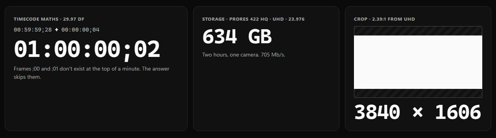
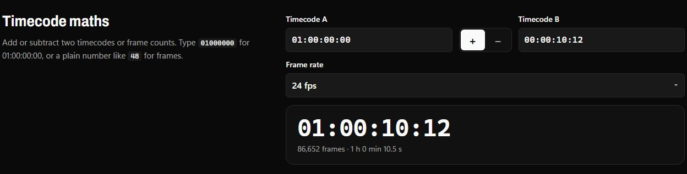

Software · tools.ruytha.dev · Free
Tools.
Every number a shoot needs. Timecode maths that gets drop-frame right, timecode to frames and back, storage for a shoot in ProRes, and the crop for any aspect ratio. Free, no account, worked out on your device.

Four calculators, one page.
- 01
Timecode maths
Add or subtract timecodes or frame counts at any rate from 23.976 to 60, drop-frame included.
- 02
Timecode and frames
A timecode as frames and seconds, a frame count as a timecode, and what those frames last at another rate.
- 03
Storage for a shoot
Every ProRes flavour from Proxy to 4444 XQ, HD to 8K, or any bit rate, times your cameras and hours.
- 04
Crop to an aspect ratio
The biggest 2.39, 1.85, 4:5 or 9:16 frame inside your footage, in even pixels, and the bars to show it whole.

Numbers you can hand to a producer.
- Drop-frame, checked frame by frameEvery frame of two hours of 29.97 DF round-trips to the same frame. Timecodes that don't exist are refused, not guessed.
- Apple's own ratesProRes sizes follow Apple's published target bit rates, scaled by pixels and frame rate.
- Nothing leaves the pageNo account and no server. Add it to your home screen and it works with no signal.
The free corner of the suite.
Tools is made by the people behind Shutter and Slate. The other two apps share one account.